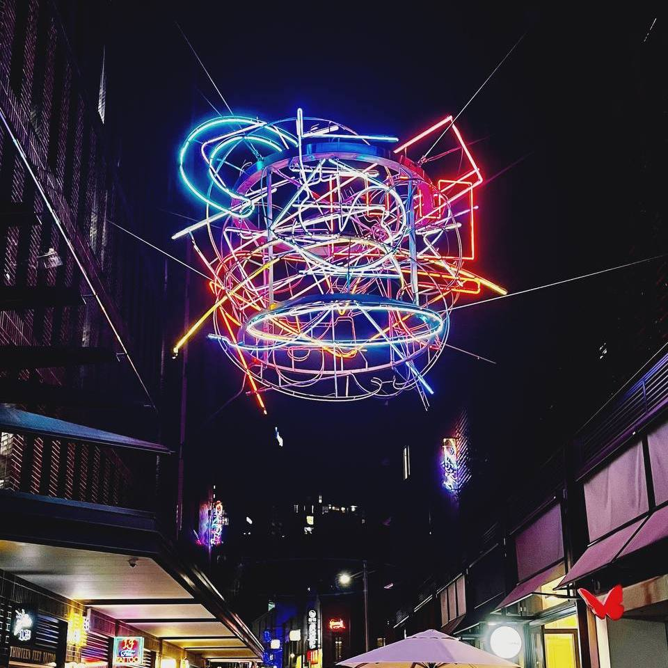

Aryan's Journey
Hey there! Welcome to my corner of the World Wide Web! I'm Aryan, a curious soul with a desire for exploring the landscapes of technology and beyond. Admitting here that I thrive on challenges that ignite my curiosity and push the boundaries of my problem-solving skills. But my interests don't end there, I'm equally fascinated by the philosophical underpinnings of life, constantly seeking to broaden my perspective and apply my understanding to daily life.
A little bit more personal, I recently moved to Sydney, eager to make new friends here as this new chapter of my life embarks. Currently pursuing a double degree in cybersecurity and criminology here at University of Technology Sydney. Prior, I was knee-deep in the realm of photonics, studying about Schrödinger's cat for quite some time ;). On this website, I'll be sharing snippets of my journey, from adjusting to life in Sydney to diving into my academic journey, alongside my hobbies.
Philosophy
Beyond tech and studies, I’m deeply invested in exploring the philosophical underpinnings of existence and the quest for a utopian society. Moving to Sydney and starting fresh has given me a chance to reflect on what truly matters. Why do we do what we do? How can we make the world a better place? These are the questions that I tackle with nowadays. That's why I'm diving into criminology alongside cybersecurity to understand human behaviour and work toward creating a better world for all. It's a lofty goal, but hey, someone's gotta dream big, right?
Hobbies
Amidst the hustle and bustle of city life, I find solace and inspiration in my passion for photography. Thanks to my lovely D750, I capture breathtaking moments of beauty and serenity, preserving memories that will last a lifetime. Saying all that, the pictures you see on this website are just a couple of my favourite shots. Don’t be shy and let me know how you feel about them through my social media contacts (or the question box).
I also have a wanderer spirit, enabling me to dally around for a couple of hours maybe days (who knows?!) in city. Exploring the vibrant streets, cultural and historical monuments, and cozy little pubs. A good companion is one of the necessities when it comes to that and finding one in Sydney is a bit of a hassle to be honest! Maybe you have the same spirit… in that case you know what to do!